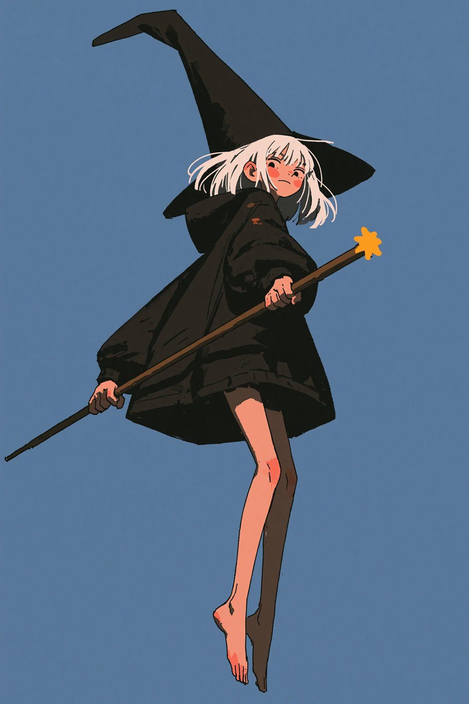
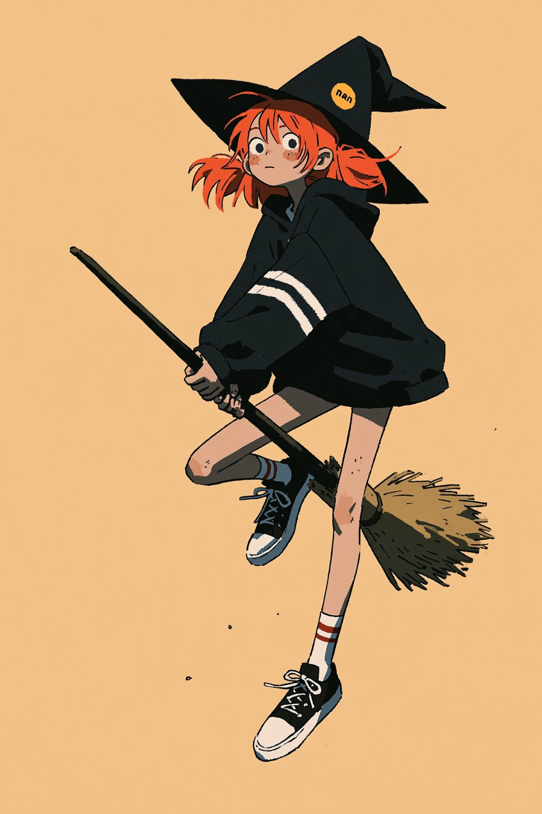
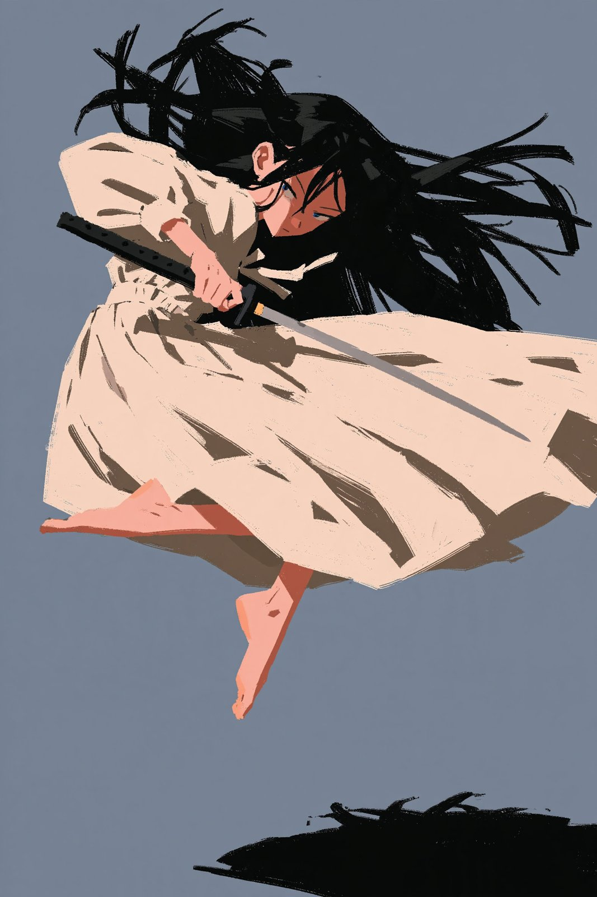

Little Witch in Flight
A flat-shaded anime witch in a white dress and tiny crown flies with arms outstretched against a plain blue background.
| Creator | Kōda @aimikoda |
|---|---|
| Platform | X |
| Model | Midjourney v8.2 |
| Likes | 113 |
| Posted | 2026-10-04 |
| Visual style | Anime |
| Regional vibe | No specific region |
| Genre | Fantasy / myth |
| Mood | Lighthearted |
Prompt · from the post
[your character definition], full body character design, mid-air action pose, angular painterly character concept art, bold silhouette design, exaggerated elongated proportions, anime character styling, shape-driven design, faceted planar shading, clean polished rendering, refined brushwork, crisp edges, sharp geometric forms, stylized anatomy, long legs, full light background, high contrast value grouping, high contrast highlights, polished modern character design --ar 2:3 --sref 1455092819 836332049 2116795492 71912650 4107378996 --profile kxxcnp9 oqw5d6p --stylize 1000